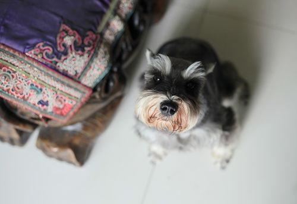
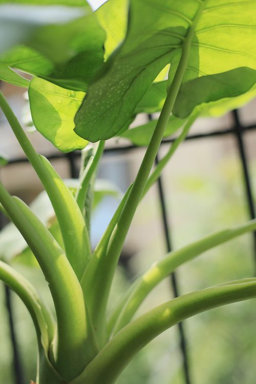
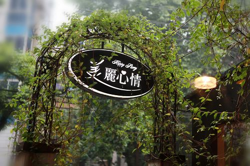
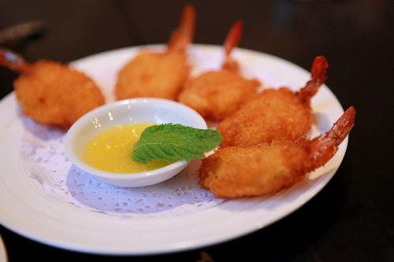
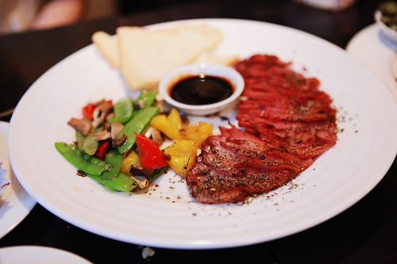
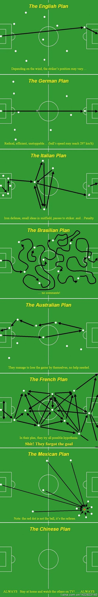

慢悠悠地夏季。 @ Jun 24, 2010
小原子给我做的口金包，装硬币零钱很方便，与上班包的颜色很搭。

箱子今天问“谁家还用这个？”
我家还用。

性感的小土豆，从肉体到情感都很性感。

晚饭后我最喜欢做的事儿：点蚊香。

进入夏季，叶片疯狂生长的滴水观音，午后的叶片下也有凉意。

小原子给我做的口金包，装硬币零钱很方便，与上班包的颜色很搭。
箱子今天问“谁家还用这个？”
我家还用。
性感的小土豆，从肉体到情感都很性感。

晚饭后我最喜欢做的事儿：点蚊香。
进入夏季，叶片疯狂生长的滴水观音，午后的叶片下也有凉意。

父亲养了两只鸡，灰碴碴的，初见纳闷，问为何养鸡。
母亲答：“人家说是鹌鹑，你爸打算买回来养。”
结果越养越是鸡的摸样。
又问：“为何烧了吃？”
答：“半夜鸡叫，扰民。”
晚饭吃着父亲烧的鸡，吃出滑稽味儿。
无独有偶，足球引发的杯具：（据美联社报道）朝鲜中央广播电视委员会第一书记因直播朝葡大战，以7：0大比分失利，严重损伤主体思想的国际形象，被迫于10分钟前辞职。太有责任感，也不好。为朝鲜队员们祈祷。
看了一部超级郁闷的电影： 《THE ROAD》，久久排遣不了心中怨气，悻悻然地去看这部电影影评，大多评价不错，我想谈谈自己的观后感，作为保留意见。
在《2012》，《The Book of Eli》之后《THE ROAD》又是一部讲述世界末日的电影，没什么特别的故事情节，整部电影都在讲述情感、心理以及生命承载的磨难，世界末日下展示出的不同人性。让我怨恨的是父亲对儿子的溺爱。。。极其艰苦又毫无希望的环境下求生，溺爱等于害了孩子。看电影我有很强的代入感，每每看到父亲对孩子无微不至的照顾，以及孩子纯洁心灵下仍然保持着人性的善良，我总会着急的说上两句。恶劣环境下只有强者才能生存。
电影就是电影，不现实的是一家四口以及一条狗在电影快结束时出现了，父子两已经挣扎在死亡线上，那么4个人1条狗，如何度过漫长的饥饿、人食人的危险、恶劣的自然环境以及疾病的困境？看到4个人1条狗的出现，我一点没感受到希望，而是觉得滑稽，这就是电影，观众真能在情感上得到慰籍吗？
如果在电影那样的情况下，我会选择生？还是会选择死？
答案是：选择死。

近期观影单：
**《THE PRISONER》（囚徒末路）--精神病医生也未必能绕出那些情节来；
**《SHUTTER IS LAND》（禁闭岛）--Teddy说：“你想象野兽一样活着？还是希望做个好人死去？”我认为这才是这部电影想要表达的真谛。
**《INVICTUS》（不败雄心）--适合在世界杯期间观看，讲述1995年南非英式橄榄球队的故事；
**《LOVE ME STILL》（依然爱我）--黑暗的表面下是一颗颗真实的心灵；
**《THE MESSENGER》（亡情使者）--需要耐心去体会的悲痛；
**《EXTRAORDINARY MEASURES》（特别措施）--同样讲述人性、求生与爱，但看得人神清气爽。
**《SOLOMON KANE》（所罗门·凯恩 2010）--符合我喜欢电影的类型，魔幻、真人、战争、正义战胜邪恶、斗士。
**《Valentine's Day》（情人节）-- 爱情轻喜剧，作为女友或妻子的女性可以认真观看一遍。

**《Leap Year》（闰年）-- 闰年四年才一次，而真爱一生只有一次。安娜和很多女孩一样，想要早日迈入婚姻的殿堂......好爱这部电影里的歌曲:You Got Me、Dream a Little Dream of Me，女主角都市女性的优雅气质摇曳在她时刻都穿着的高跟鞋上，很有风韵。
择日不如撞日，非计划内聚餐，去“美丽心情”吃了顿西餐。
菜点可口，凭这一点可以忽略店家服务态度与环境吧？






作为一个伪球迷，还是观看了几场感兴趣球队的比赛直播，坐在冬天的棉毯上观看，耿耿于怀，主卧的空调因为通讯故障等人来修，前几天还可以不开空调，但是昨晚已经无法在没有空调的情况下睡觉了，遂搬到客厅过夜。大金来人维修，因为一颗铜螺丝上的过紧，开裂导致新冷酶泄露。。。安装责任还是配件质量问题？太难鉴定。白天在家做家务尽量不开空调，稍微动一动就出汗，吃顿饭一身汗，喝壶茶一身汗，晾晒衣服也会汗如雨下，我是爱出汗的主儿，天气也到了难熬的夏季。出完汗，身体顿觉舒畅。
今天将棉毯从沙发上抽下放进洗衣机里清洗，给裸露的沙发上了一层皮革保护剂，用干抹布细细地揉开乳液，揉进皮革的毛孔中去，象保护自己的皮肤一般。假期除了电视机，最累的就是洗衣机了。
几天下来，感受作为一名职业主妇，并非轻易之事，在家的时间会比在办公桌前还要忙碌。这忙碌让人心甘情愿。如果可以这样度过夏天，也是美事一桩。



晚上看完电影《Extraordinary Measures 》，还没到11点，接着看会儿杂志，不经意间看到这篇《幸福在生活的细微之处》，里面介绍了上海的“苔青”，勾起兴趣，想到2009年在上海拍过它的照片，当时并不知道这是什么地方，里面用来做什么的。门紧闭，白天的走廊里亮着好氛围的灯光，有点儿说不出来的意境。于是，我打开电脑，准备记录看到的这篇文字，仅针对现在的自己，我给这个标题加了一个问号。
“苔青工作室”的创办人叫陆宇星，70后女性。从日本读完建筑回到上海，回来后她发现自己就象进入一座新修的花园，各种植物还在经历一个物竞天择的阶段，没有形成相互依存的平衡系统，大家都在拼命争夺尚不可知的位置。每个人感受到的压力都非常大，难有幸福可言。
她开始明白一件事：只要尽到自己的责任，反而可以更从容地感受幸福，就在那生活的细微之处。于是学建筑的她并没有加入到构建城市的钢精水泥大军中。她有她自己想要构建的生活：它完整，有生命，会呼吸。这种生命力应该作为建筑的一部分，存在于我们的生活空间里。同时，她也要亲身去实现它。于是，便有了“苔青”。去年夏天，她租下一处院子，将地板重新铺上吸水好的青砖。野草可以顺着青砖的缝隙生长上来。院子尽头的那口井，井水用来浇花。院子里的金桂是桂花最好的品种，每到秋天，最好的事就是在树下赏桂喝茶。
透过“苔青”，她认识了一些朋友，也给他们的生活带去了一些绿意。她常去乡间，几乎每个月去一次云南，也常去离市区很远的花市。看到没种过的草便拿回来种。她活着，并不需要很多钱。
植物的生长也给她启发：你养它只不过是从大自然把它们借过来，环境适合，它便生存，不适合，它就离开。你给它什么，它接受什么，不给，它也不抱怨，自然离开。人的本性不可能象植物这样。因为生存能力强，很多人便会夸大自己的主观愿望，当能力和主观愿望不一致的时候，就会有很多负面情绪来破坏内心的平衡。
城市并非没有幸福生活的可能性，只是个高难度的工作。很多人把问题想复杂了，一个人想要什么呢，年轻时候无非希望美貌，这是天生的，然后希望有好的伴侣，这部分取决于运气，后来希望家庭美满人际和睦，这也是可以努力的。对她来说，也是这样。她天亮睡下，正午起床，晚间工作，遵循着自己的生长规律，并不觉得有任何不健康。她在过的就是她想要的生活。
读完她的想法，对于处于两点一线的我仍然需要一个“问号”去思考，是否幸福已不重要，重要的是何为幸福？如何幸福？人生的幸福不是由优良基因、金钱和运气决定的。朋友纳闷现在的我为何越来越宅，完全与过去背道而驰，活了三十几年，现在才体会到一些幸福感。赞同shuwua说的：“跟从自己的心就好，以我的标准，幸福在职场没有，在胡同里有。”那么，我们为何还要斤斤计较“越追求越抑郁的伪幸福”呢？简单，但不要失去感受快乐的能力，就这样。
拍摄于2009年@上海

一个人喜欢吃的理由可以如太阳为什么照耀地球一样，写成十万八千里的长卷论著，也说不清楚。活着喘气容易，用心活着却不是一件容易的事，用嘴吃饭人人都无师自通，用心吃饭则有一定的难度，即使名师指点也未必有几个能学得会。--ZJT
生活安逸，心思渐渐放在做饭这件在以前看来婆婆妈妈的事情上。我爸爸是无锡人，擅长红烧菜肴，烹饪技术在我家是NO.1。可是我妈妈却在吃上极不讲究，只要煮熟即可，并常常表达对讲究吃穿的蔑视。在这种天壤之别的搭配下生活若干年的我，想来继承了我爸爸的爱好。讲究吃和穿，有那么可耻吗？人生最重要的莫过于吃饱穿暖，当然我们已经越过这道基础线，走向被美食安慰的境界。每每自己动手做几个家常便饭，吃下它们，如果不可口顿时感觉这一天空荡荡的。反之，则感受到“生活幸福。”
我的豪华晚宴：
上左--鲜香菇炒青菜 上右--蒜苗炒肉丝（第二次烹饪记录）
下左--毛豆榨菜炒肉丝（南京本地家常菜） 下右--清蒸舻鱼

Some people entered in my life like sunshine in a rainy day.Some gave me difficult day but anyway I try,every day,to wake me up saying to me that a new day is a gift.
The life is so stressing.
But,is it cool?